- Введение в R и визуализация данных
Г. Мороз
Презентация доступна по ссылке: https://goo.gl/78y9br
0. Как добыть R и Rstudio
Бесплатное программное обеспечение:
1. Основы R
1.1 Базовые элементы
9L # целое число## [1] 9-3.47 # рациональные числа## [1] -3.475+2i # мнимое число## [1] 5+2i"Санкт-Петербург" # строка## [1] "Санкт-Петербург"TRUE # логическое значение## [1] TRUEFALSE # логическое значение## [1] FALSEpi # число π## [1] 3.1415931.2 Калкулятор
2+2## [1] 49-4.5## [1] 4.5117*2## [1] 234234/2## [1] 1175^7## [1] 781255**7## [1] 7812525^0.5## [1] 525^(1/2) # скобки!## [1] 525^1/2 # скобки!## [1] 12.555%%3 # остаток от деления## [1] 1sin(pi/2)## [1] 1cos(pi)## [1] -1sum(34, 23, 14)## [1] 71prod(34, 23, 14)## [1] 109481.3 Векторы и его индексация
2:9## [1] 2 3 4 5 6 7 8 933:25## [1] 33 32 31 30 29 28 27 26 25-5:-3## [1] -5 -4 -3c(1,5,8,3)## [1] 1 5 8 3rep(c(8, 2), 4)## [1] 8 2 8 2 8 2 8 2rep(c(8, 2), each = 4)## [1] 8 8 8 8 2 2 2 2c(TRUE, TRUE, FALSE, TRUE)[4]## [1] TRUEc("alpha", "beta", "gamma")[2:3]## [1] "beta" "gamma"c("alpha", "beta", "gamma")[-3]## [1] "alpha" "beta"
(1) Прибавьте к вектору
1:54
(2) Посчитайте \[\frac{\sum_{i=1}^{100}4 \times i^2}{1250}\]
1.4 Переменные
a <- 5:24 # Сочетание Alt - ставит стрелочку
a[3]## [1] 7a <- a + 3
a[3]## [1] 1023 -> a
a## [1] 23letters## [1] "a" "b" "c" "d" "e" "f" "g" "h" "i" "j" "k" "l" "m" "n" "o" "p" "q"
## [18] "r" "s" "t" "u" "v" "w" "x" "y" "z"LETTERS## [1] "A" "B" "C" "D" "E" "F" "G" "H" "I" "J" "K" "L" "M" "N" "O" "P" "Q"
## [18] "R" "S" "T" "U" "V" "W" "X" "Y" "Z"a == 23 # равно?## [1] TRUEa != 28 # не равно?## [1] TRUEb <- 1:30
b[b %% 3 == 0] # индекс принимает условие!## [1] 3 6 9 12 15 18 21 24 27 30
1.5 Функции и описательные статистики
height <- c(1, 1.7, 1.8, 1.74, 1.56, 1.66, 1.68, 1.77, 1.76, 6)
mean(height)## [1] 2.067mean(height, trim = 0.1)## [1] 1.70875weighted.mean(height, w = c(1,2,2,2,1,2,2,1,1,1))## [1] 1.95range(height)## [1] 1 6max(height)## [1] 6min(height)## [1] 1sd(height)## [1] 1.401381median(height)## [1] 1.72quantile(height)## 0% 25% 50% 75% 100%
## 1.0000 1.6650 1.7200 1.7675 6.0000quantile(height, probs = c(0.1, 0.2))## 10% 20%
## 1.504 1.640IQR(height) # разность 3ей и 2ой квартилей## [1] 0.1025summary(height)## Min. 1st Qu. Median Mean 3rd Qu. Max.
## 1.000 1.665 1.720 2.067 1.768 6.0001.6 Датафрейм и его индексация
df <- data.frame(name = c("GM", "b", "c", "d", "f"),
height = c(1.76, 1.56, 1.45, 1.94, 1.81),
brown_hair = c(FALSE, TRUE, FALSE, TRUE, TRUE))
dfhead(df)tail(df)summary(df)## name height brown_hair
## b :1 Min. :1.450 Mode :logical
## c :1 1st Qu.:1.560 FALSE:2
## d :1 Median :1.760 TRUE :3
## f :1 Mean :1.704
## GM:1 3rd Qu.:1.810
## Max. :1.940df[1,]df[,2]## [1] 1.76 1.56 1.45 1.94 1.811.7 Считывание файлов в R
df <- read.table("путь к файлу")
df <- read.table("интернет ссылка")
df <- read.table(...) # разделитель: запятая
df <- read.table(..., sep = "\t") # разделитель: табуляция
df <- read.table(..., sep = ";") # разделитель: точка с запятой1.8 Работа с пакетами
2. Визуализация в R: ggplot2
2.1 Почему визуализация: Anscombe’s quartet
Anscombe, F. J. (1973). “Graphs in Statistical Analysis”:

5.2 Datasaurus
Matejka and Fitzmaurice (2017) “Same Stats, Different Graphs”:
datasaurus <- read_tsv("https://goo.gl/gtaunr")
datasaurus %>%
ggplot(aes(x, y))+
geom_point()+
facet_wrap(~dataset)+
theme_bw()datasaurus %>%
group_by(dataset) %>%
summarise(mean_X = mean(x),
mean_Y = mean(y),
sd_X = sd(x),
sd_Y = sd(y),
cor = cor(x, y),
n_obs = n()) %>%
select(-dataset) %>%
round(., 1)3.3 Data
The majority of examples in that presentation are based on Chi-kuk 2007. Experiment consisted of a perception and judgment test aimed at measuring the correlation between acoustic cues and perceived sexual orientation. Naïve Cantonese speakers were asked to listen to the Cantonese speech samples collected in Experiment and judge whether the speakers were gay or heterosexual. There are 14 speakers and following parameters:
- [s] duration (s.duration.ms)
- vowel duration (vowel.duration.ms)
- fundamental frequencies mean (F0) (average.f0.Hz)
- fundamental frequencies range (f0.range.Hz)
- percentage of homosexual impression (perceived.as.homo)
- percentage of heterosexal impression (perceived.as.hetero)
- speakers orientation (orientation)
- speakers age (age)
Download data
homo <- read.csv("http://goo.gl/Zjr9aF")
homo6.1 Scaterplot
- base R
plot(homo$s.duration.ms, homo$vowel.duration.ms)
- ggplot2
ggplot(data = homo, aes(s.duration.ms, vowel.duration.ms)) +
geom_point()- dplyr, ggplot2
homo %>%
ggplot(aes(average.f0.Hz, age))+
geom_smooth(method = "lm")+
geom_point(aes(color = orientation))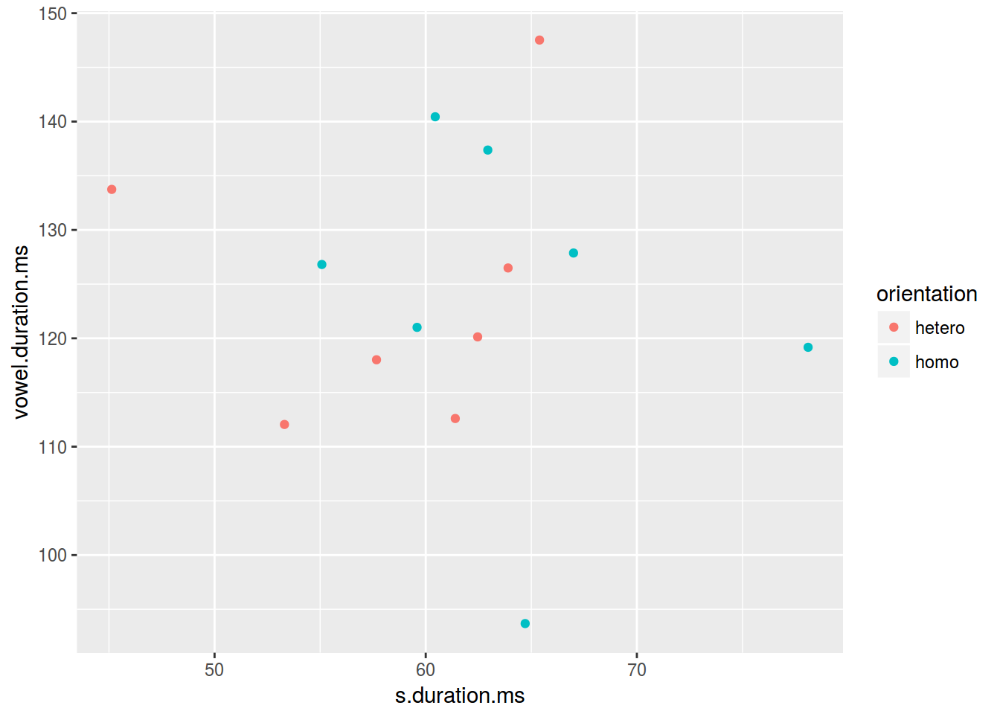
6.1.1 Scaterplot: color
- base R
plot(homo$s.duration.ms, homo$vowel.duration.ms,
col = c("red", "blue")[homo$orientation])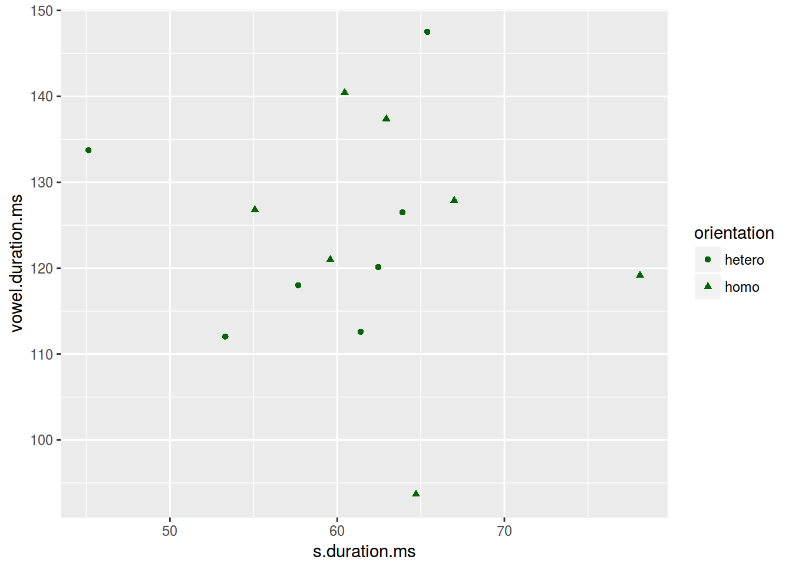
- dplyr, ggplot2
homo %>%
ggplot(aes(s.duration.ms, vowel.duration.ms,
color = orientation)) +
geom_point()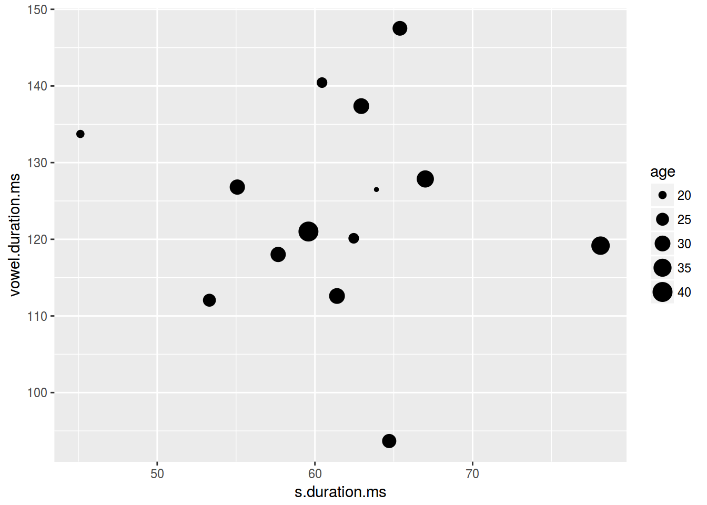
6.1.2 Scaterplot: shape
- base R
plot(homo$s.duration.ms, homo$vowel.duration.ms,
pch = c(16, 17)[homo$orientation])plot(1:25, pch = 1:25)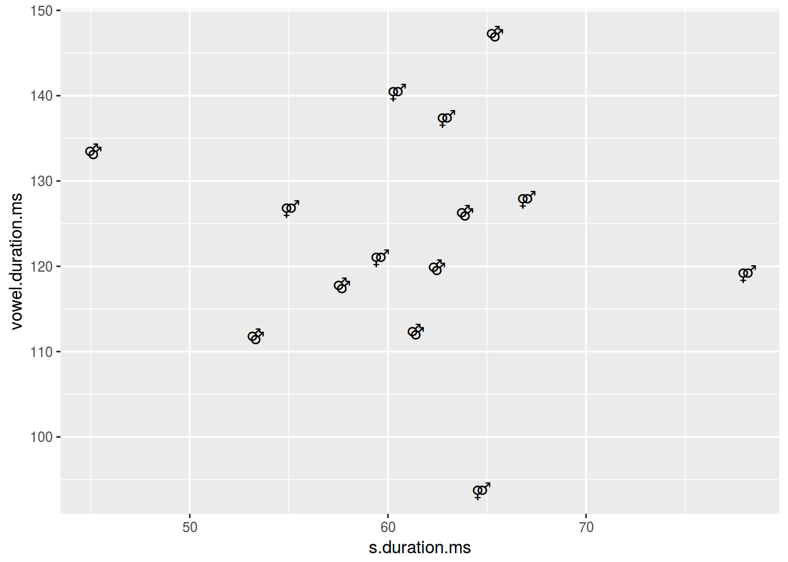
- dplyr, ggplot2
homo %>%
ggplot(aes(s.duration.ms, vowel.duration.ms,
shape = orientation)) +
geom_point(color = "green")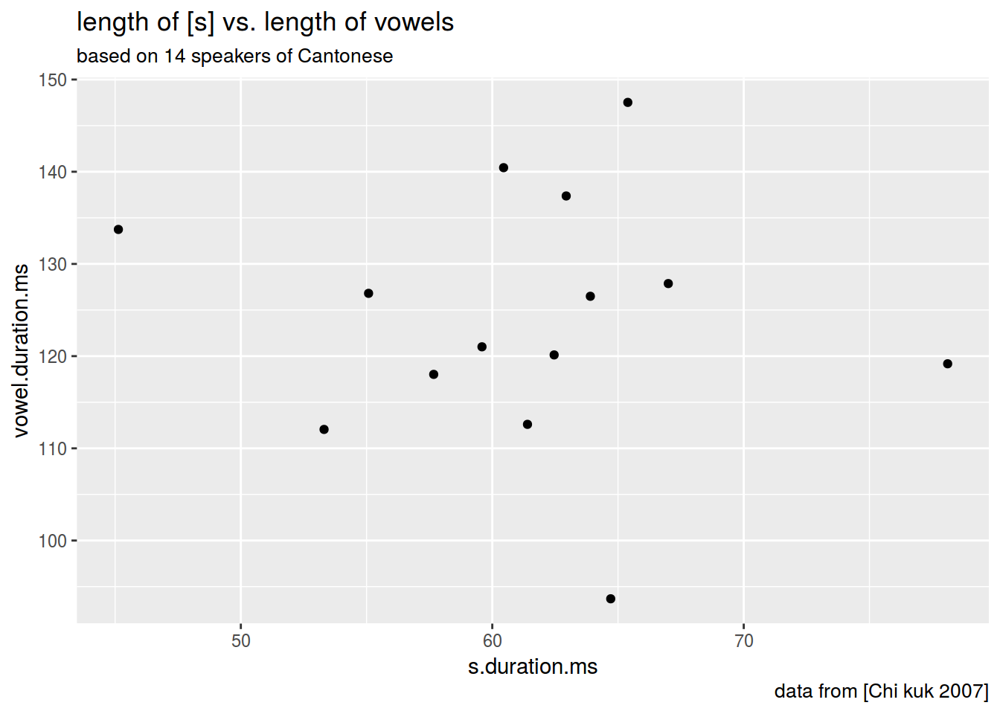
6.1.3 Scaterplot: size
- base R
plot(homo$s.duration.ms, homo$vowel.duration.ms,
cex = homo$age/20)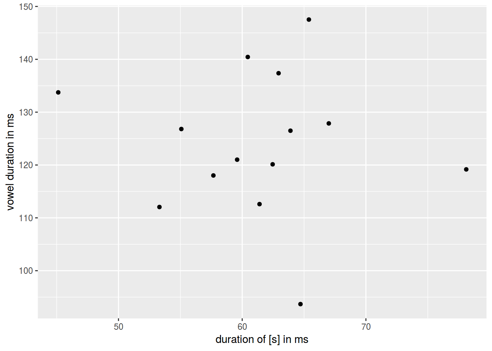
- :(
plot(homo$s.duration.ms, homo$vowel.duration.ms,
cex = homo$age)
- dplyr, ggplot2
homo %>%
ggplot(aes(s.duration.ms, vowel.duration.ms,
size = age)) +
geom_point()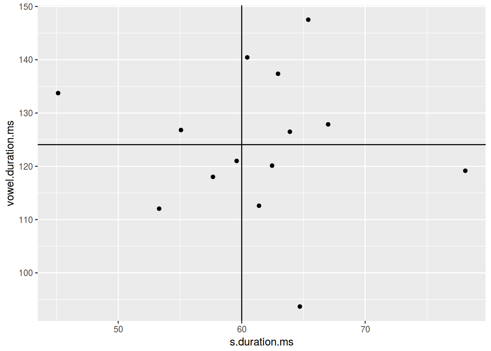
6.1.4 Scaterplot: text
- base R
plot(homo$s.duration.ms, homo$vowel.duration.ms,
pch = c("⚤", "⚣")[homo$orientation])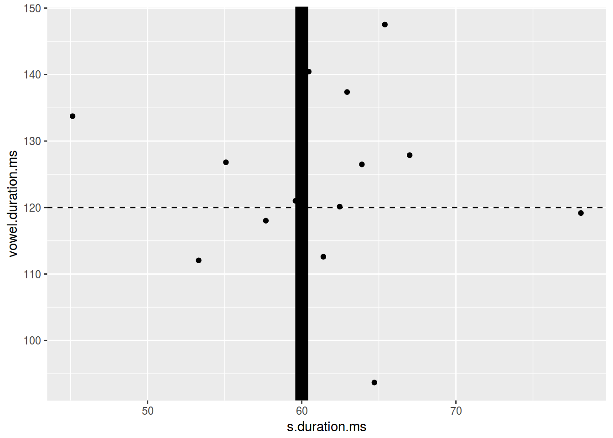
- dplyr, ggplot2
levels(homo$orientation) <- c("⚣", "⚤")
homo %>%
ggplot(aes(s.duration.ms, vowel.duration.ms, label = orientation, fill = orientation)) +
geom_label()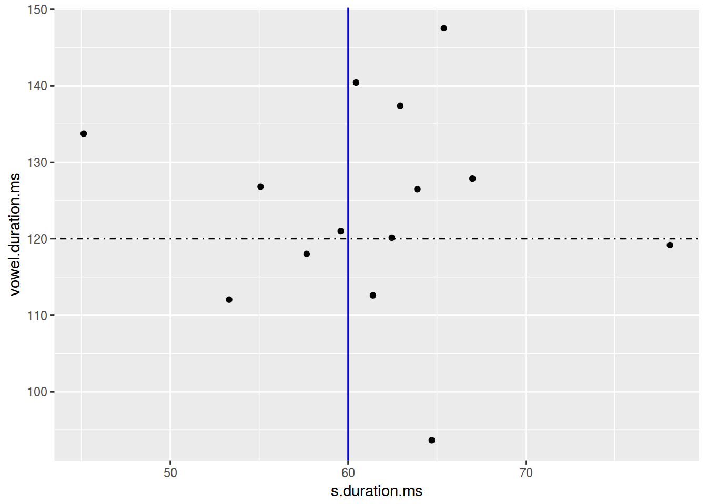
6.1.5 Scaterplot: title
- base R
plot(homo$s.duration.ms, homo$vowel.duration.ms,
main = "length of [s] vs. length of vowels")
- dplyr, ggplot2
homo %>%
ggplot(aes(s.duration.ms, vowel.duration.ms)) +
geom_point()+
labs(title = "length of [s] vs. length of vowels",
subtitle = "based on 14 speakers of Cantonese",
caption = "data from [Chi kuk 2007]")
6.1.6 Scaterplot: axis
- base R
plot(homo$s.duration.ms, homo$vowel.duration.ms,
xlab = "duration of [s] in ms", ylab = "vowel duration in ms")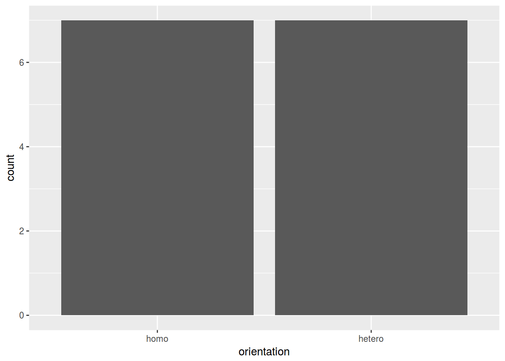
- dplyr, ggplot2
homo %>%
ggplot(aes(s.duration.ms, vowel.duration.ms)) +
geom_point()+
xlab("duration of [s] in ms")+
ylab("vowel duration in ms")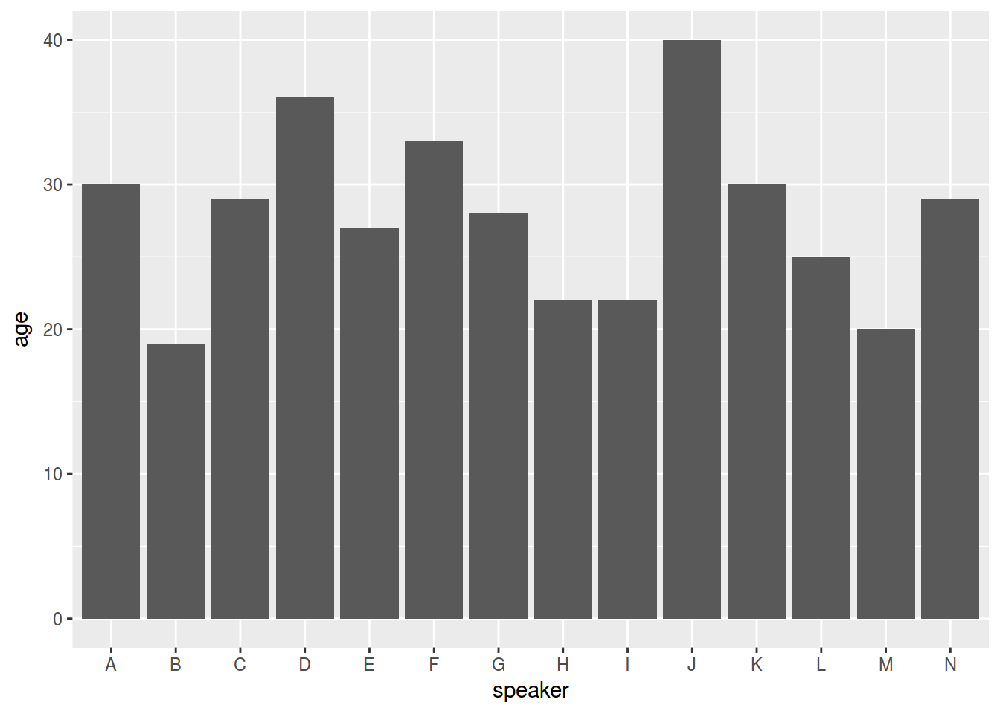
6.1.7 Log scales

Lets use the frequency dictionary for Russian
freq <- read.csv("https://goo.gl/TlX7xW", sep = "\t")
freq %>%
arrange(desc(Freq.ipm.)) %>%
slice(1:200) %>%
ggplot(aes(Rank, Freq.ipm.)) +
geom_point() +
xlab("") +
ylab("ipm")- base R
plot(1:52138, freq$Freq.ipm.,
xlab = NA, ylab = "ipm",
las = 1,
log = "yx")
- dplyr, ggplot2
freq %>%
ggplot(aes(1:52138, Freq.ipm.))+
geom_point()+
xlab("")+
ylab("ipm")+
scale_y_log10()
6.1.8 Scaterplot: rug
- R base
plot(homo$s.duration.ms, homo$vowel.duration.ms)
rug(homo$s.duration.ms)
rug(homo$vowel.duration.ms, side = 2)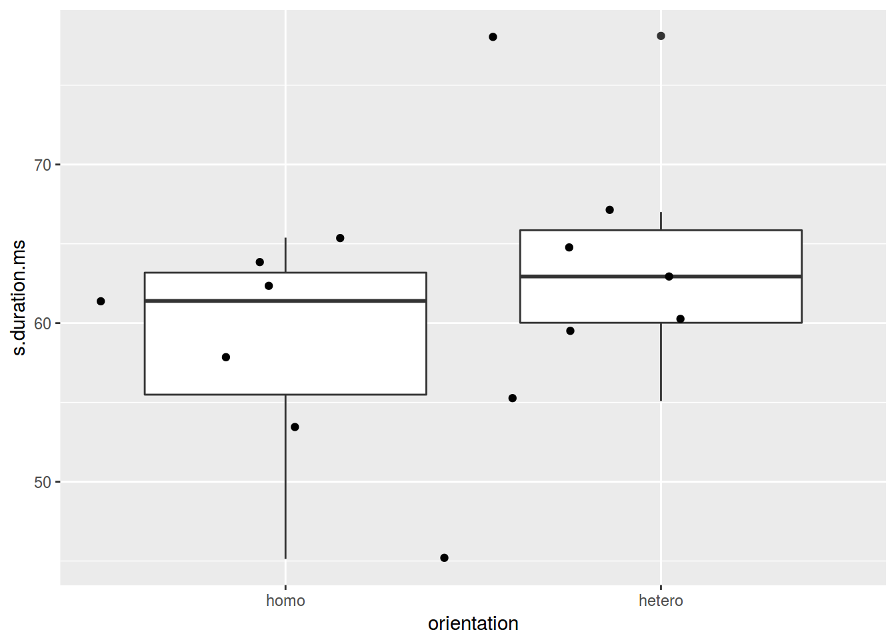
- dplyr, ggplot2
homo %>%
ggplot(aes(s.duration.ms, vowel.duration.ms, color = orientation)) +
geom_point() +
geom_rug()homo %>%
ggplot(aes(s.duration.ms, vowel.duration.ms, color = orientation)) +
geom_point() +
geom_rug()
6.1.9 Scaterplot: lines
- R base
plot(homo$s.duration.ms, homo$vowel.duration.ms)
abline(h = 120, v = 60)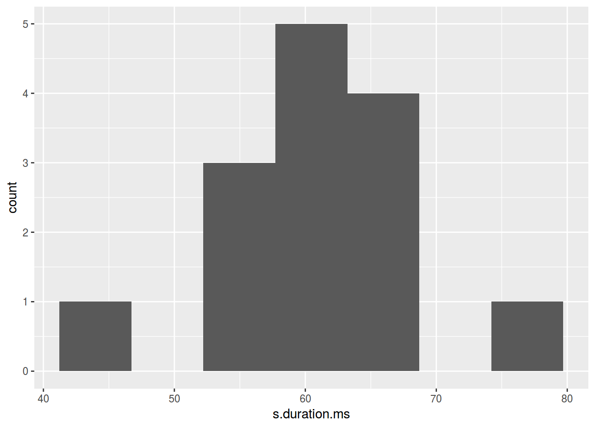
- dplyr, ggplot2
homo %>%
ggplot(aes(s.duration.ms, vowel.duration.ms)) +
geom_point() +
geom_hline(yintercept = mean(homo$vowel.duration.ms))+
geom_vline(xintercept = 60)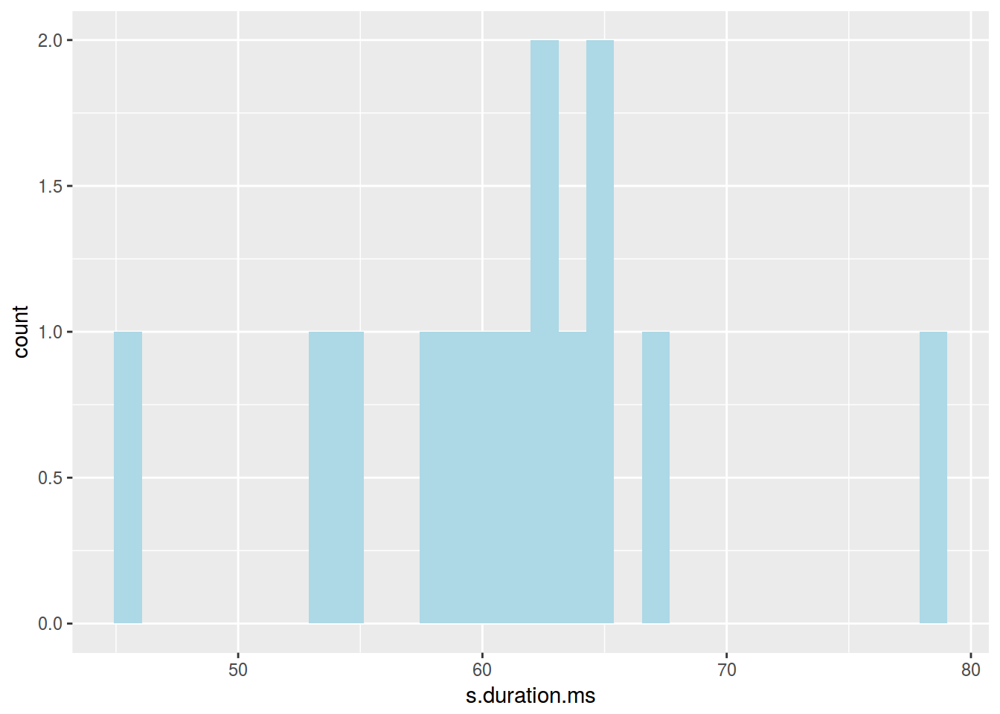
- R base
plot(homo$s.duration.ms, homo$vowel.duration.ms)
abline(h = 120, lty = 2)
abline(v = 60, lwd = 42)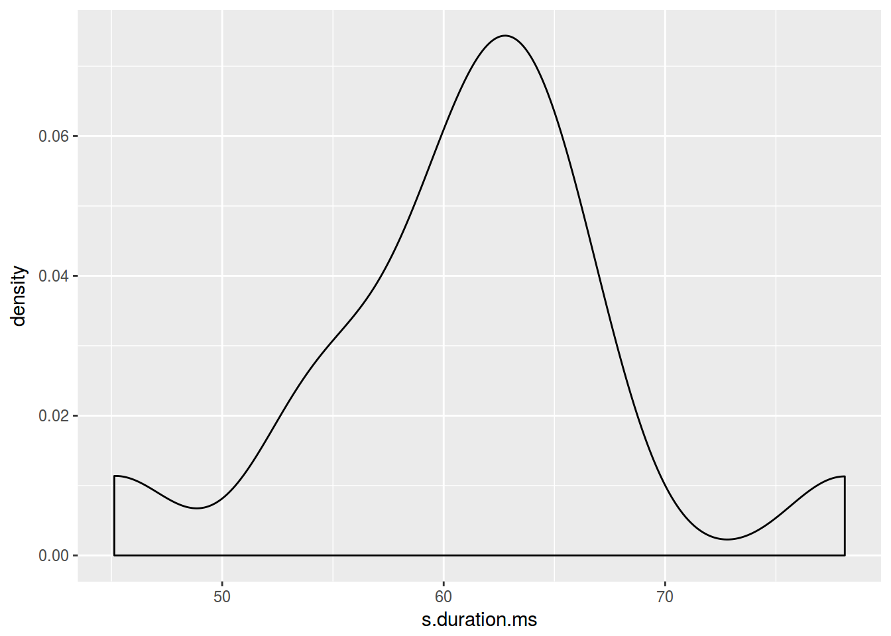
- dplyr, ggplot2
homo %>%
ggplot(aes(s.duration.ms, vowel.duration.ms)) +
geom_point() +
geom_hline(yintercept = 120, linetype = 2)+
geom_vline(xintercept = 60, size = 5)
- R base
plot(homo$s.duration.ms, homo$vowel.duration.ms)
abline(h = 120, lty = 4)
abline(v = 60, col = "blue")
- dplyr, ggplot2
homo %>%
ggplot(aes(s.duration.ms, vowel.duration.ms)) +
geom_point() +
geom_hline(yintercept = 120, linetype = 4)+
geom_vline(xintercept = 60, color = "blue")6.1.10 Scaterplot: annotate
The function annotate adds geoms to a plot.
homo %>%
ggplot(aes(s.duration.ms, vowel.duration.ms)) +
geom_point()+
annotate(geom = "rect", xmin = 77, xmax = 79,
ymin = 117, ymax = 122, fill = "red", alpha = 0.2) +
annotate(geom = "text", x = 78, y = 125,
label = "Who is that?\n Outlier?")6.2.1 Barplots: basics
There are two possible situations:
- not aggregate data
head(homo[, c(1, 9)])- aggregate data
head(homo[, c(1, 10)])Not aggregate data
- base R
barplot(table(homo$orientation))- dplyr, ggplot2
homo %>%
ggplot(aes(orientation)) +
geom_bar()
Aggregate data
- base R
barplot(homo$age, names.arg = homo$speaker)
- dplyr, ggplot2
homo %>%
ggplot(aes(speaker, age)) +
geom_bar(stat = "identity")6.2.2 Barplots: color
- base R
barplot(homo$age, names.arg = homo$speaker,
col = homo$orientation) * dplyr, ggplot2
* dplyr, ggplot2
homo %>%
ggplot(aes(speaker, age, fill = orientation)) +
geom_bar(stat = "identity")6.3.1 Boxplots: basics
- base R
boxplot(homo$s.duration.ms~homo$orientation)* dplyr, ggplot2
homo %>%
ggplot(aes(orientation, s.duration.ms)) +
geom_boxplot()6.3.2 Boxplots: points
- base R
boxplot(homo$s.duration.ms~homo$orientation)
stripchart(homo$s.duration.ms ~ homo$orientation,
pch = 1, vertical = T, add = T)* dplyr, ggplot2
homo %>%
ggplot(aes(orientation, s.duration.ms)) +
geom_boxplot()+
geom_point()6.3.3 Boxplots: jitter
- base R
boxplot(homo$s.duration.ms~homo$orientation)
stripchart(homo$s.duration.ms~homo$orientation,
pch = 1, vertical = T, add = T, method = "jitter")* dplyr, ggplot2
homo %>%
ggplot(aes(orientation, s.duration.ms)) +
geom_boxplot() +
geom_jitter(width = 0.5)6.3.3 Boxplots: jitter
- base R There is a horrible package vioplot
- dplyr, ggplot2
homo %>%
ggplot(aes(orientation, s.duration.ms)) +
geom_violin() +
geom_jitter()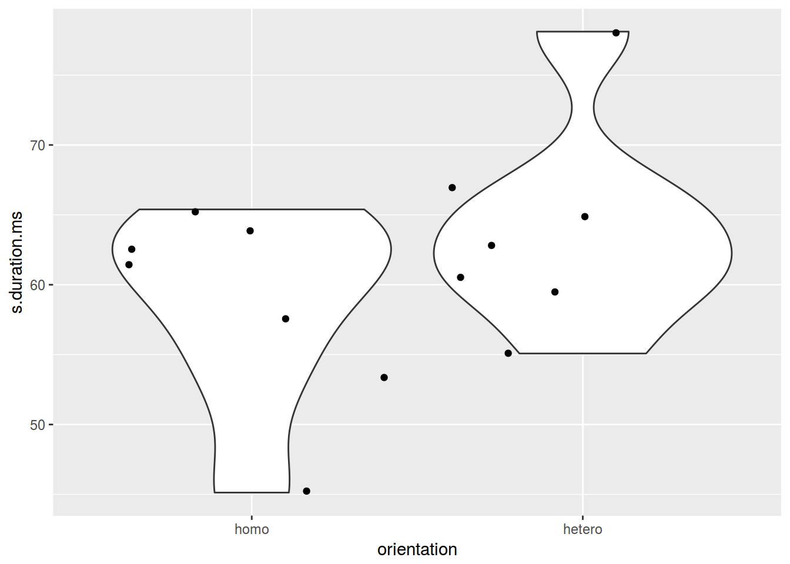
6. Preliminary summary: two variables
- scaterplot: two quantitative varibles
- barplot: nominal varible and one number
- boxplot: nominal varible and quantitative varibles
- jittered points or sized points: two nominal varibles
mtcars %>%
mutate(newvar = mpg > 22,
newvr = mpg < 17) %>%
ggplot(aes(newvr, newvar, color = newvar))+
geom_jitter(width = 0.2)mtcars %>%
mutate(newvar = mpg > 22,
newvr = mpg < 17) %>%
group_by(newvar, newvr) %>%
summarise(number = n()) %>%
ggplot(aes(newvr, newvar, label = number))+
geom_point(aes(size = number, color = newvar))+
geom_text()+
scale_size(range = c(10, 30))+
guides(size = F)6.4.1 Histogram: basics
- base R
hist(homo$s.duration.ms) * dplyr, ggplot2
* dplyr, ggplot2
homo %>%
ggplot(aes(s.duration.ms)) +
geom_histogram()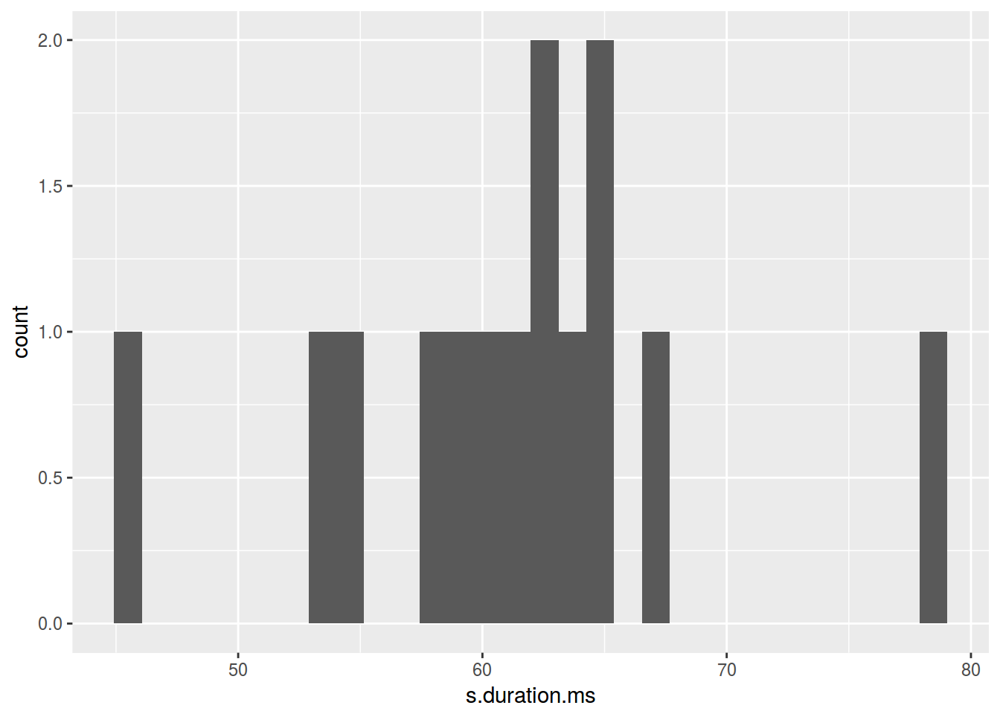 How many histogram bins do we need?
- [Sturgers 1926] nclass.Sturges(adyghe$F1)
- [Scott 1979] nclass.scott(adyghe$F1)
[Freedman, Diaconis 1981] nclass.FD(adyghe$F1)
base R
hist(homo$s.duration.ms,
breaks = nclass.FD(homo$s.duration.ms))* dplyr, ggplot2
homo %>%
ggplot(aes(s.duration.ms)) +
geom_histogram(bins = nclass.FD(homo$s.duration.ms))
6.4.2 Histogram: color
- base R
hist(homo$s.duration.ms, col = "lightblue")* dplyr, ggplot2
homo %>%
ggplot(aes(s.duration.ms)) +
geom_histogram(fill = "lightblue")
6.5.1 Density plot
- base R
plot(density(homo$s.duration.ms))* dplyr, ggplot2
homo %>%
ggplot(aes(s.duration.ms)) +
geom_density()
6.5.1 Density plot: color
- base R
plot(density(homo$s.duration.ms), col = "blue")* dplyr, ggplot2
homo %>%
ggplot(aes(s.duration.ms)) +
geom_density(color = "blue")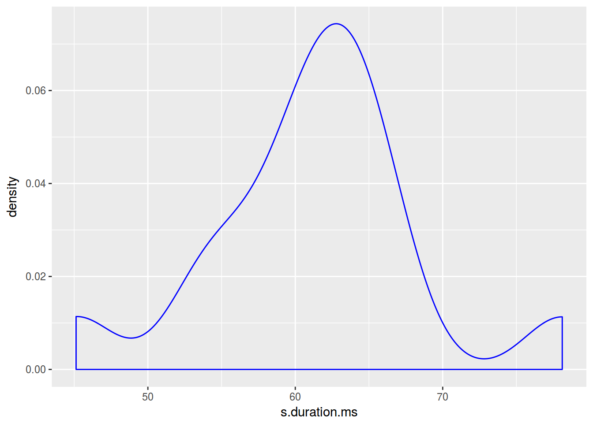
homo %>%
ggplot(aes(s.duration.ms)) +
geom_density(fill = "lightblue")6.5.1 Density plot: several plots
homo %>%
ggplot(aes(s.duration.ms, fill = orientation)) +
geom_density()
homo %>%
ggplot(aes(s.duration.ms, fill = orientation)) +
geom_density(alpha = 0.2)
6.6 Joy plot
library(ggjoy)
homo %>%
ggplot(aes(s.duration.ms, orientation)) +
geom_joy()
library(ggjoy)
homo %>%
ggplot(aes(s.duration.ms, orientation, fill = orientation)) +
geom_joy()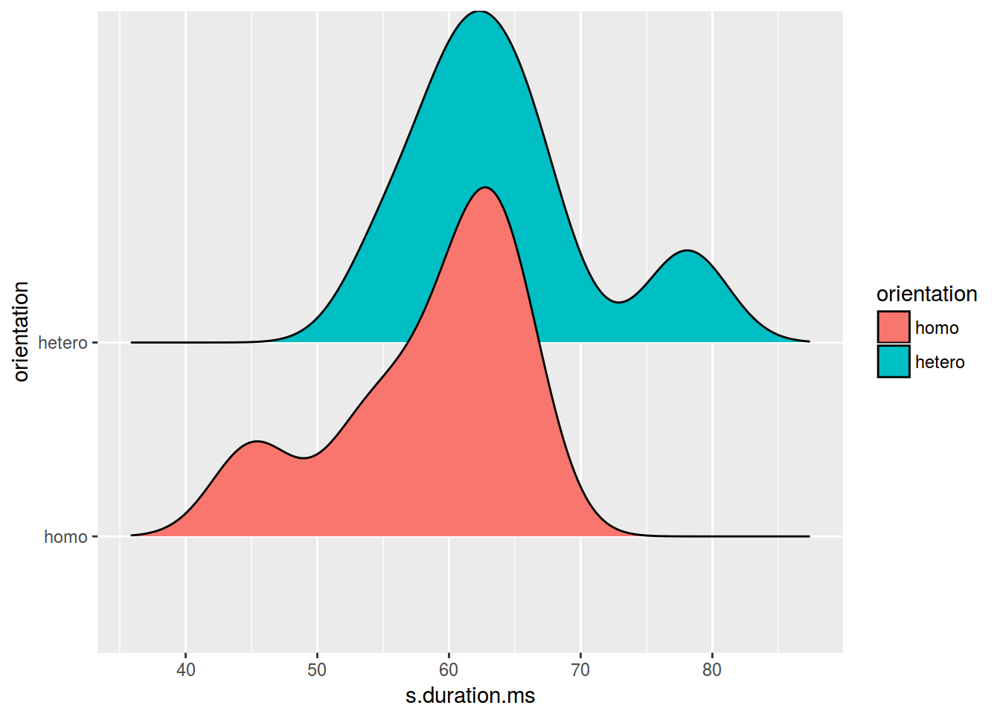
6.7 Facets
Facetization is the most powerful ggplot2 tool that allow to split up your data by one or more variables and plot the subsets of data together.
6.7.2 facet_wrap()
homo %>%
ggplot(aes(speaker, s.duration.ms))+
geom_point() +
facet_wrap(~orientation)You can see that there are all speakers on both graph, but only certain speakers have dot value. It is because by default scales of facets are equal.
homo %>%
ggplot(aes(speaker, s.duration.ms))+
geom_point() +
facet_wrap(~orientation, scales = "free")
It is possible to make only one scale “free”:
homo %>%
ggplot(aes(speaker, s.duration.ms))+
geom_point() +
facet_wrap(~orientation, scales = "free_x")6.7.1 facet_grid()
It is possible to facet using more then one variable.
homo %>%
mutate(older_then_28 = ifelse(age > 28, "older", "younger")) %>%
ggplot(aes(speaker, s.duration.ms))+
geom_point() +
facet_wrap(older_then_28~orientation, scales = "free_x")homo %>%
mutate(older_then_28 = ifelse(age > 28, "older", "younger")) %>%
ggplot(aes(speaker, s.duration.ms))+
geom_point() +
facet_grid(older_then_28~orientation, scales = "free_x")
There is a nice argument margins.
homo %>%
mutate(older_then_28 = ifelse(age > 28, "older", "younger")) %>%
ggplot(aes(speaker, s.duration.ms))+
geom_point() +
facet_grid(older_then_28~orientation, scales = "free_x", margins = TRUE)Sometimes it is nice to put your data in all facets:
homo %>%
ggplot(aes(speaker, s.duration.ms))+
# Add an additional geom without facetization variable!
geom_point(data = homo[,-9], aes(speaker, s.duration.ms), color = "grey") +
geom_point() +
facet_wrap(~orientation)